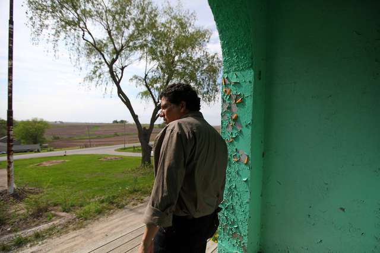
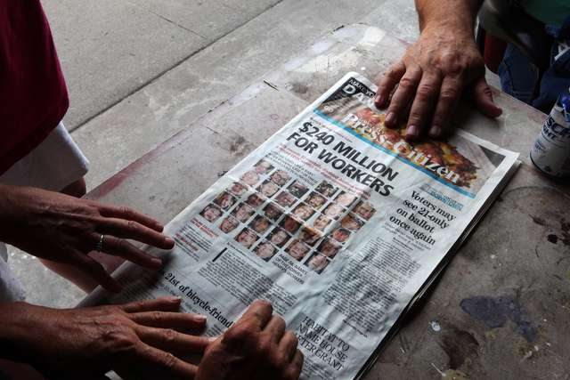

The Case
In the wake of the Atalissa revelations in early 2009, Iowa's governor at the time, Chet Culver, acknowledged that "every level of government has failed these men since 1974." Hearings, investigations and interagency finger-pointing predictably followed.
But no criminal charges were filed. Law enforcement officials concluded that the men's accounts lacked consistency, and that the person most responsible for the abuse, T. H. Johnson, was dead - even though the squalor worsened considerably after his death.
Sheriff David White of Muscatine County saw nothing to pursue. The men "had about every game, game table, yard games, etc., to play in their off hours both indoor and outdoor," he wrote in a recent email. "I don't believe there is any one of my staff that felt that these individuals were in any way abused or mistreated."
Henry's Turkey Service was eventually cited for various wage violations by state and federal labor agencies. But the men's last, best hope for justice, it seemed, rested with Robert Canino, a regional attorney in the Dallas office of the Equal Employment Opportunity Commission. The chatty, tenacious lawyer took the case because it touched on one of his areas of expertise, human trafficking.
First, Mr. Canino won a $1.3 million judgment for two years of back wages, arguing that his 32 clients deserved to be paid the same as nondisabled colleagues doing similar work. He then set out to prove emotional harm, in what the law calls the "loss of enjoyment of life."
The lawyer spent many hours with the men. When their stories became almost too much for him - too upsetting, too complex - one of the men, Henry Wilkins, placed a hand on his shoulder and said: Don't worry, Robert, we got your back.
The case against Henry's Turkey Service unfolded last April in a courtroom in Davenport, where the blond wood and recessed lighting clashed with descriptions of boarded windows and moldy mattresses.
The men of Atalissa did not testify. Many others spoke in their stead, including Sue A. Gant, a nationally recognized expert in developmental disabilities who had gotten to know the men. Decades earlier, she had helped thousands of people living in New York's infamous Willowbrook State School to integrate into the community.
In clinically precise language, Dr. Gant laid out the profound physical and mental harm done to each of the men. "The aggrieved workers could have enjoyed a good life," she testified. "Instead, they lost decades of healthy life experiences."
After Kenneth Henry and Randy Neubauer took the stand to deny responsibility and blame each other, the jury awarded $7.5 million to each of the Atalissa men, for a total of $240 million. Mr. Canino knew instantly that the judge would soon reduce the amount to about $1.6 million, the cap allowed by law for a business with fewer than 101 employees.
Still, hearing the decisive verdict, he wept.

The verdict conveyed the communal outrage felt about a case that, in courtrooms and the halls of government, has become shorthand for the segregation and exploitation of people with disabilities.
In particular, the Henry's case has cast a harsh spotlight on the provision of the Fair Labor Standards Act that allows employers - whether Henry's Turkey Service or a sheltered workshop - to pay subminimum wages to employees with disabilities.
"Much as Willowbrook challenged us all to re-examine our assumptions and look more deeply into residential institutions, Henry's Turkey Service has challenged us to look more closely at employment institutions," Eve Hill, a deputy assistant attorney general in the Civil Rights Division of the Department of Justice, said in a recent email.
As a result, she says, the federal government has expanded its efforts to crack down on "unnecessary segregation in employment systems," and has already challenged an overreliance on segregated sheltered workshops in Oregon and Rhode Island.
Finding a solution is complex, with some fearing that dismantling the provision would leave even fewer employment options for people with disabilities. But many disability rights advocates argue that it has become a license to exploit, citing the Henry's case as Exhibit A.
"The verdict in the Henry's case demonstrates that this way of thinking has to go," says Steven Schwartz, the legal director for the Center for Public Representation.
Advocates also say that the case played a role in the ultimate inclusion of people with disability in Mr. Obama's executive order to raise the minimum wage to $10.10 an hour for workers employed under certain federal contracts.
What's more, Senator Harkin says the case gave impetus to his fight to add a long-sought provision to the Obama administration's signature health care act of 2009: an option that encourages states, through financial incentives, to support people with disabilities in the community, rather than in the forced segregation of institutions.
What happened in Atalissa is hard to shake, the senator adds. "It's as close to involuntary servitude as I've ever seen."
Several weeks after the trial, Mr. Canino drove up from Texas to update the men in Waterloo on their case. Walking into the conference room, he spread his arms for the hugs sure to come from those eager to fill him in about dishwashing jobs, plans to go camping and girlfriends who like to slow dance.
"I know that some of you don't want to talk about Atalissa anymore," Mr. Canino began.
Several shook their heads. "No way," said James Fowler, who had pulled guts for 30 years. "No part of that."
Slowly, but without condescension, Mr. Canino said each man had been awarded roughly $100,000 in damages and back pay - money that has yet to be received. He explained that collecting the money from Henry's Turkey Service would be another challenge.
"I can't promise you what I can get you," he said.
A quiet took hold. Then Mr. Wilkins said, "I got your back on that."
Mr. Canino smiled to the floor. "Well, that's why we won," he said, voice trembling. "People knew you had my back."